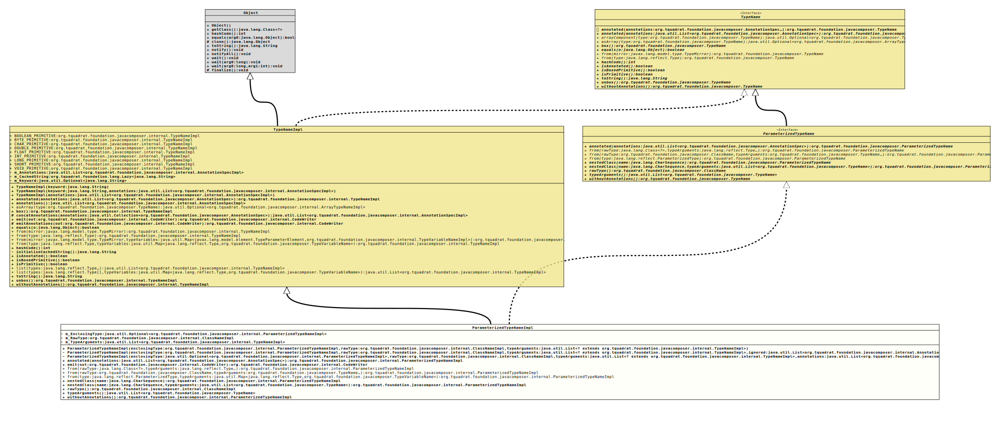

Class ParameterizedTypeNameImpl
java.lang.Object
org.tquadrat.foundation.javacomposer.internal.TypeNameImpl
org.tquadrat.foundation.javacomposer.internal.ParameterizedTypeNameImpl
- All Implemented Interfaces:
ParameterizedTypeName,TypeName
@ClassVersion(sourceVersion="$Id: ParameterizedTypeNameImpl.java 1065 2023-09-28 06:16:50Z tquadrat $")
@API(status=INTERNAL,
since="0.0.5")
public final class ParameterizedTypeNameImpl
extends TypeNameImpl
implements ParameterizedTypeName
The implementation of
TypeNameImpl
for parameterised types.- Modified by:
- Thomas Thrien (thomas.thrien@tquadrat.org)
- Version:
- $Id: ParameterizedTypeNameImpl.java 1065 2023-09-28 06:16:50Z tquadrat $
- Since:
- 0.0.5
- UML Diagram
-

UML Diagram for "org.tquadrat.foundation.javacomposer.internal.ParameterizedTypeNameImpl"
{kind=link}
-
Field Summary
FieldsModifier and TypeFieldDescriptionprivate final Optional<ParameterizedTypeNameImpl> The enclosing type, if any.private final ClassNameImplThe class name for this type.private final List<TypeNameImpl> The type arguments.Fields inherited from class org.tquadrat.foundation.javacomposer.internal.TypeNameImpl
BOOLEAN_PRIMITIVE, BYTE_PRIMITIVE, CHAR_PRIMITIVE, DOUBLE_PRIMITIVE, FLOAT_PRIMITIVE, INT_PRIMITIVE, LONG_PRIMITIVE, SHORT_PRIMITIVE, VOID_PRIMITIVE -
Constructor Summary
ConstructorsModifierConstructorDescriptionprivateParameterizedTypeNameImpl(Optional<ParameterizedTypeNameImpl> enclosingType, ClassNameImpl rawType, List<? extends TypeNameImpl> typeArguments, List<AnnotationSpecImpl> annotations) Creates a newParameterizedTypeNameImplinstance.ParameterizedTypeNameImpl(ParameterizedTypeNameImpl enclosingType, ClassNameImpl rawType, List<? extends TypeNameImpl> typeArguments) Creates a newParameterizedTypeNameImplinstance.privateParameterizedTypeNameImpl(ParameterizedTypeNameImpl enclosingType, ClassNameImpl rawType, List<? extends TypeNameImpl> typeArguments, List<AnnotationSpecImpl> ignored) Creates a newParameterizedTypeNameImplinstance. -
Method Summary
Modifier and TypeMethodDescriptionannotated(List<AnnotationSpec> annotations) Creates a new instance for an implementation ofTypeNameas a copy of this one, but with the given annotations added.final CodeWriteremit(CodeWriter out) Emits this type name instance to the givenCodeWriter.static final ParameterizedTypeNameImplReturns a parameterised type, applying the given type arguments to the given raw type.static final ParameterizedTypeNameImplfrom(ParameterizedType type, Map<Type, TypeVariableName> typeArguments) Returns a parameterised type equivalent to the given type, with the given type arguments added.static final ParameterizedTypeNameImplReturns a parameterised type, applying the given type arguments to the given raw type.static final ParameterizedTypeNameImplDeprecated, for removal: This API element is subject to removal in a future version.static ParameterizedTypeNameget(ParameterizedType type, Map<Type, TypeVariableName> typeArguments) Deprecated, for removal: This API element is subject to removal in a future version.UseParameterizedTypeName.from(ParameterizedType)instead.static final ParameterizedTypeNameImplDeprecated, for removal: This API element is subject to removal in a future version.Usefrom(ClassName, TypeName...)instead.nestedClass(CharSequence name) Returns a newParameterizedTypeNameinstance for the specified name as nested inside this class.nestedClass(CharSequence name, List<TypeName> typeArguments) Returns a newParameterizedTypeNameinstance for the specified name as nested inside this class, with the specified type arguments.final ClassNameImplrawType()Returns the raw type for this parameterised type name.Returns the type arguments for this parameterised type name.Creates a new instance for an implementation ofTypeNameas a copy of this one, but without any annotations.Methods inherited from class org.tquadrat.foundation.javacomposer.internal.TypeNameImpl
annotations, asArray, box, concatAnnotations, emitAnnotations, equals, from, from, from, from, get, get, get, get, hashCode, isAnnotated, isBoxedPrimitive, isPrimitive, list, list, toString, unboxMethods inherited from class java.lang.Object
clone, finalize, getClass, notify, notifyAll, wait, wait, waitMethods inherited from interface org.tquadrat.foundation.javacomposer.TypeName
annotated, box, equals, hashCode, isAnnotated, isBoxedPrimitive, isPrimitive, toString, unbox
-
Field Details
-
m_EnclosingType
The enclosing type, if any. -
m_RawType
The class name for this type. -
m_TypeArguments
The type arguments.
-
-
Constructor Details
-
ParameterizedTypeNameImpl
public ParameterizedTypeNameImpl(ParameterizedTypeNameImpl enclosingType, ClassNameImpl rawType, List<? extends TypeNameImpl> typeArguments) Creates a newParameterizedTypeNameImplinstance.- Parameters:
enclosingType- The optional enclosing type for this instance.rawType- The class name for this instance.typeArguments- The type arguments.
-
ParameterizedTypeNameImpl
private ParameterizedTypeNameImpl(ParameterizedTypeNameImpl enclosingType, ClassNameImpl rawType, List<? extends TypeNameImpl> typeArguments, List<AnnotationSpecImpl> ignored) Creates a newParameterizedTypeNameImplinstance.- Parameters:
enclosingType- The optional enclosing type for this instance.rawType- The class name for this instance.typeArguments- The type arguments.ignored- The annotations.
-
ParameterizedTypeNameImpl
private ParameterizedTypeNameImpl(Optional<ParameterizedTypeNameImpl> enclosingType, ClassNameImpl rawType, List<? extends TypeNameImpl> typeArguments, List<AnnotationSpecImpl> annotations) Creates a newParameterizedTypeNameImplinstance.- Parameters:
enclosingType- The optional enclosing type for this instance.rawType- The class name for this instance.typeArguments- The type arguments.annotations- The annotations.
-
-
Method Details
-
annotated
Creates a new instance for an implementation ofTypeNameas a copy of this one, but with the given annotations added.- Specified by:
annotatedin interfaceParameterizedTypeName- Specified by:
annotatedin interfaceTypeName- Overrides:
annotatedin classTypeNameImpl- Parameters:
annotations- The annotations.- Returns:
- The new instance.
-
emit
Emits this type name instance to the givenCodeWriter.- Overrides:
emitin classTypeNameImpl- Parameters:
out- The code writer.- Returns:
- The code writer.
- Throws:
UncheckedIOException- Something went wrong when emitting to the output target.
-
from
@API(status=STABLE, since="0.2.0") public static final ParameterizedTypeNameImpl from(Class<?> rawType, Type... typeArguments) Returns a parameterised type, applying the given type arguments to the given raw type.- Parameters:
rawType- The class name for the new type.typeArguments- The type arguments.- Returns:
- The new instance of
ParameterizedTypeName.
-
from
@API(status=STABLE, since="0.2.0") public static final ParameterizedTypeNameImpl from(ClassName rawType, TypeName... typeArguments) Returns a parameterised type, applying the given type arguments to the given raw type.- Parameters:
rawType- The class name for the new type.typeArguments- The type arguments.- Returns:
- The new instance of
ParameterizedTypeName.
-
from
@API(status=STABLE, since="0.2.0") public static final ParameterizedTypeNameImpl from(ParameterizedType type, Map<Type, TypeVariableName> typeArguments) Returns a parameterised type equivalent to the given type, with the given type arguments added.- Parameters:
type- The other type.typeArguments- The type arguments.- Returns:
- The new instance of
ParameterizedTypeName.
-
get
@Deprecated(since="0.2.0", forRemoval=true) @API(status=DEPRECATED, since="0.0.5") public static final ParameterizedTypeNameImpl get(Class<?> rawType, Type... typeArguments) Deprecated, for removal: This API element is subject to removal in a future version.Usefrom(Class, Type...)instead.Returns a parameterised type, applying the given type arguments to the given raw type.- Parameters:
rawType- The class name for the new type.typeArguments- The type arguments.- Returns:
- The new instance of
ParameterizedTypeName.
-
get
@Deprecated(since="0.2.0", forRemoval=true) @API(status=DEPRECATED, since="0.0.5") public static final ParameterizedTypeNameImpl get(ClassName rawType, TypeName... typeArguments) Deprecated, for removal: This API element is subject to removal in a future version.Usefrom(ClassName, TypeName...)instead.Returns a parameterised type, applying the given type arguments to the given raw type.- Parameters:
rawType- The class name for the new type.typeArguments- The type arguments.- Returns:
- The new instance of
ParameterizedTypeName.
-
get
@Deprecated(since="0.2.0", forRemoval=true) @API(status=DEPRECATED, since="0.0.5") public static ParameterizedTypeName get(ParameterizedType type, Map<Type, TypeVariableName> typeArguments) Deprecated, for removal: This API element is subject to removal in a future version.UseParameterizedTypeName.from(ParameterizedType)instead.Returns a parameterised type equivalent to the given type.- Parameters:
type- The other type.typeArguments- The type arguments.- Returns:
- The new instance of
ParameterizedTypeName.
-
nestedClass
Returns a newParameterizedTypeNameinstance for the specified name as nested inside this class.- Specified by:
nestedClassin interfaceParameterizedTypeName- Parameters:
name- The name for the nested class.- Returns:
- The new nested class.
-
nestedClass
Returns a newParameterizedTypeNameinstance for the specified name as nested inside this class, with the specified type arguments.- Specified by:
nestedClassin interfaceParameterizedTypeName- Parameters:
name- The name for the nested class.typeArguments- The type arguments.- Returns:
- The new nested class.
-
rawType
Returns the raw type for this parameterised type name.- Specified by:
rawTypein interfaceParameterizedTypeName- Returns:
- The raw type.
-
typeArguments
Returns the type arguments for this parameterised type name.- Specified by:
typeArgumentsin interfaceParameterizedTypeName- Returns:
- The type arguments.
-
withoutAnnotations
Creates a new instance for an implementation ofTypeNameas a copy of this one, but without any annotations.- Specified by:
withoutAnnotationsin interfaceParameterizedTypeName- Specified by:
withoutAnnotationsin interfaceTypeName- Overrides:
withoutAnnotationsin classTypeNameImpl- Returns:
- The new instance.
-
from(Class, Type...)instead.